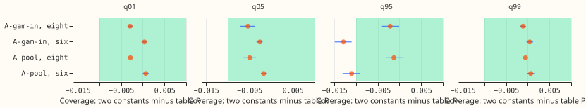
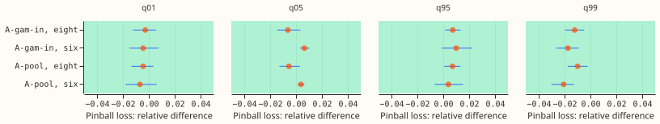

Can two constants per metering group replace table P for the first-release demand candidates?
Two constants recalibrate the demand forecast as well as table P does at the eight Primaries whose series are in megavolt-amperes (MVA) only, but not at the six whose series are in signed megawatts (MW). A Primary is a primary substation. Table P is the recalibration from experiment 483. It holds 20 widening factors per metering group (the eight, the six, or the two short-history Primaries), one for each of 5 lead bands (ranges of hours ahead) and 4 tail quantiles (q01, q05, q95, and q99, the 1%, 5%, 95%, and 99% points of the forecast distribution). At the eight, the first-release demand forecasts (A-pool, five seeds of one neural network averaged, and A-gam-in, the same network with an additive-model input) have upper quantiles that sit too close to the median and lower quantiles that are already in range. At the six, the lower quantiles sit too far below the median as well. This experiment asked whether one lower constant (scaling q01 and q05) and one upper constant (scaling q95 and q99) per metering group can replace the table. Each constant was fitted on earlier months only and compared with table P on the same held-out forecast rows. At the eight the constants match table P. At the six, q95 coverage (the share of actuals at or below q95) is 0.011 to 0.013 lower than with table P. Wind and solar were not tested, because their stored forecasts sit in other experiments' folders; this experiment covered demand only.

Figure 1 shows the coverage of the two-constant rule minus table P's, with 99.8% Bonferroni intervals (24 tests), against the 0.01 limit (green band). The fit uses earlier folds only.

Figure 2 shows the same difference in pinball loss as a share of table P's, against the 5% limit.
Results
The tables use clean rows and four scored folds (2025-12 to 2026-06), fitted on earlier folds only. A fold is one test month of origin times.
| Group | Candidate | Variant | q01 | q05 | q95 | q99 | CRPS |
|---|---|---|---|---|---|---|---|
| eight | A-pool | raw | 0.005 | 0.033 | 0.920 | 0.983 | 4.372 |
| eight | A-pool | table P | 0.010 | 0.045 | 0.949 | 0.992 | 4.372 |
| eight | A-pool | two constants | 0.007 | 0.040 | 0.947 | 0.991 | 4.372 |
| eight | A-gam-in | table P | 0.010 | 0.044 | 0.946 | 0.992 | 4.330 |
| eight | A-gam-in | two constants | 0.007 | 0.038 | 0.944 | 0.991 | 4.330 |
| six | A-pool | raw | 0.002 | 0.018 | 0.874 | 0.968 | 3.597 |
| six | A-pool | table P | 0.010 | 0.042 | 0.927 | 0.982 | 3.585 |
| six | A-pool | two constants | 0.011 | 0.040 | 0.916 | 0.983 | 3.588 |
Coverage targets: q01 0.005 to 0.02, q05 0.03 to 0.07, q95 0.93 to 0.97, q99 0.98 to 0.995. The eight has 393,820 rows and the six 268,145 rows per candidate.
- Decision rule at the eight (A-pool and A-gam-in, earlier-folds-only): passes. Coverage differences from table P are -0.003 (q01), -0.005 to -0.006 (q05), -0.001 to -0.002 (q95), and -0.001 (q99), every Bonferroni interval inside +/-0.01. Pinball loss differs by at most 1.3% at any tail (A-pool q95 +0.7%, interval 0.1% to 1.3%; q99 -1.0%), inside the 5% limit. CRPS differs by -0.0001 (interval -0.0008 to +0.0007) points, the minimum detectable effect being 0.044.
- Decision rule at the six (A-pool and A-gam-in): does not pass on q95 coverage, so table P stays. A-gam-in is clearly outside the limit; A-pool's interval spans it, so it is inconclusive. The difference from table P is -0.011 (interval -0.013 to -0.009) for A-pool and -0.013 (-0.015 to -0.011) for A-gam-in, against a limit of 0.01. Pinball loss is within 5% (q99 is 2.1% better than table P), and CRPS is 0.003 points worse (0.002 to 0.004). Two-constant q95 coverage is 0.916 against the 0.93 floor; table P is also below it, at 0.927.
- Fitted constants: the lower factor is 0.95 to 0.98 at the eight (so the lower tail is left almost untouched), 0.77 to 0.88 at the six. The upper factor is 1.10 to 1.24 at the eight and 1.03 to 1.26 at the six, and the upper factor varies by fold.
- Leave-one-fold-out fit (comparable to experiment 483's headline table, optimistic because it uses later folds): at the eight q95 coverage is 0.009 to 0.010 below table P's, and the interval crosses the 0.01 limit (A-pool -0.0088, interval -0.0106 to -0.0070), so equivalence is inconclusive there. The other coverage and pinball limits at the eight hold; the six fails q95 coverage as above (-0.013).
- Lead times of 12 to 36 hours (not a gating slice): the constants do worse here than over all leads, in both directions. At the eight A-pool's q95 coverage is 0.958 with the constants against 0.946 with table P (+0.012, interval +0.008 to +0.017), and q05 is 0.033 against 0.051 (-0.018, interval -0.023 to -0.014), both outside the 0.01 limit. At the six q95 is 0.922 against 0.938 (-0.017). One pair of constants per metering group does not match table P's lead-band factors within this band.
- Cold winter nights: at the eight A-pool's q95 coverage is 0.930 (constants) and 0.929 (table P), against 0.874 raw. A-gam-in's is 0.927 and 0.926. At the six it is 0.867 and 0.879, against 0.835 raw. Cold nights stay under-covered under both rules.
- Serving table. Table P: 20 factors per metering group, a lead-band lookup, and a clip rule. Two constants: two numbers per metering group, refitted on the earlier months at training time. No other part of the serving path changes. The eight can use the constants; the six keeps table P.
- Not tested: wind and solar. Experiment 481 found a constant widening of 1.10 best for wind at every number of seeds, which suggests the rule may fit wind, but the stored forecasts of experiments 429, 430, 450, and 461 have not been re-scored. This is a named gap.
Method
- Arms and rule. A-pool, A-gam-in (the eight only), and K2-425A (report-only) from experiment 483's cache. The lower factor scales the distance of q01 and q05 from the median and the upper factor scales q95 and q99. Each is the 0.50 to 1.80 grid value (step 0.01) that minimises the summed pinball loss of its two quantiles on the fitting rows, per metering group.
- Fits. Earlier-folds-only (each scored fold is fitted on the folds before it; 2025-10 is never scored) is the planning figure. Leave-one-fold-out is the comparison with experiment 483. Table P is fitted on the same rows as the constants, with its own rule (it skips cells with fewer than 200 rows or a spread under 1e-6, which fall back to a factor of 1).
- Rows and cleaning. The
gam14row set of experiment 470, clean rows (those with no labelled event), flagged exact-zero half-hours dropped and the experiment 399 start cut for D15 and D18, both inherited from experiment 483's cache. July 2026 is unused. Stored forecasts come from monthly refits; nothing is refitted. - Intervals. Paired row-level differences, resampled in blocks of one origin day within a month (20,000 resamples). The Bonferroni count is 24 (four tail quantiles, coverage and pinball loss, for A-pool at the eight, A-pool at the six, and A-gam-in at the eight; the A-gam-in six, K2-425A, cold-night, and 12 to 36 hour intervals use the same level but are not counted). The equivalence limits (0.01 of coverage, 5% of pinball loss) sit at or below experiment 483's minimum detectable effects at the six (q95 coverage 0.014), so a result inside the limits whose interval crosses one is inconclusive, and a claim of equivalence cannot show a smaller difference than the minimum detectable effect.
- Code.
ml-experiments/00492-*/e00492_two_constant.pyande00492_report.py; the scoring reusese00470_score.row_metricsand experiment 483'se00483_tailsand experiment 435'se00435_table_p_provisional. Tables are underdata/ml-experiments/00492-*/work/.
Checks
- Median minus mean forecast per site: not available, because the stored forecasts hold quantiles only.
- Mean or median error beside the contrast: not computed; the contrast is a calibration difference between two recalibrations of the same median, so the median is unchanged.
- Audit triggers: none fired. The prediction missed in one respect (the six fails on q95 coverage, not on the q05 and q99 pinball clauses the plan named).
- Reviews: the code review, the numbers review, and the prose review are recorded in the PR body.
- Prediction outcome: P1 held (earlier-folds-only). P2 held in direction (the six fails) but for q95 coverage. P3 held (upper factor 1.10 to 1.24, lower factor 0.95 to 0.98 at the eight). P4 held at the six and is marginal at the eight (0.926 to 0.930 under both rules, against a floor of 0.93).
Caveats and next steps
- Caveats: five non-contiguous folds are few, and the earlier-folds-only comparison scores four. Every score is selection-biased, because the same folds choose the candidates and score them. NGED's event labels are incomplete, so rows with no labelled event may hold unlabelled events. No time series plots of forecasts are drawn, because the forecasts are experiment 483's and this experiment changes only the tail widths; those plots are on the experiment 483 page.
- Next steps: re-score wind and solar with the same rule from the stored forecasts of experiments 429, 430, 450, and 461. For the six, a lead-band-specific upper factor is untested.